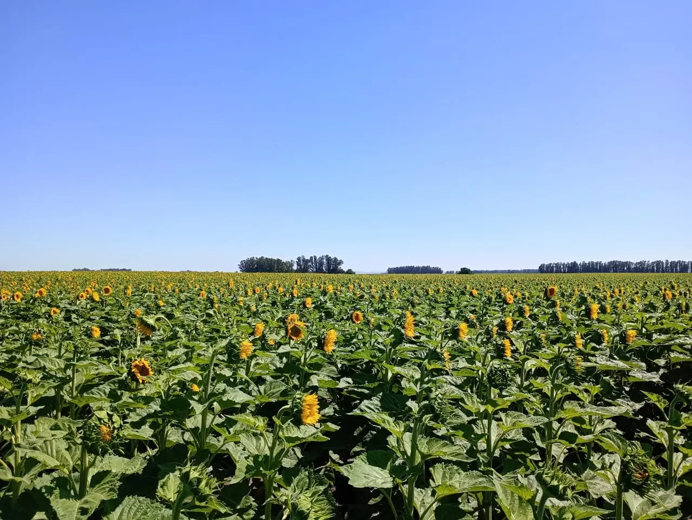

Fijación de Nitrógeno
Priestia megaterium captura nitrógeno atmosférico y lo convierte en amonio nutricional para el cultivo.
NITRÓGENO EFICIENTE PARA GIRASOL
Nexula-N Easy Flow potencia la eficiencia de tu girasol: fija nitrógeno desde la semilla, mejora el stand y reduce la fricción durante la siembra.

Nexula-N combina inoculación biológica y lubricación con grafito para una siembra más simple y eficiente.
Priestia megaterium captura nitrógeno atmosférico y lo convierte en amonio nutricional para el cultivo.
Inocula y lubrica directamente en la tolva, simplificando la logística y reduciendo el uso de líquidos.
Mejora el arranque y la uniformidad del stand gracias a una mejor colonización radicular.
Raíces más robustas y nutrición constante se traducen en mayor potencial de rendimiento.
El impacto de Nexula-N en el desarrollo de la planta es evidente a simple vista.
Consistencia de rendimiento superior en diferentes ambientes y campañas.
*Datos de rendimiento en kg/ha. Comparativa entre Testigo y tratamiento con Nexula-N Easy Flow a dosis de 5 gr/kg de semilla.

El ingrediente activo es la cepa exclusiva PHP1706 en endosporas. Esta bacteria ha sido seleccionada específicamente por su doble acción promotora:
Se agrega directamente junto con la semilla. La vibración del equipo distribuye el polvo uniformemente.
5 a 10 gramos por kg de semilla de girasol.
Actúa como lubricante, reduciendo la fricción y protegiendo la semilla.
Respaldo
Nuestro equipo técnico-comercial te asesora sin cargo para integrarlo a tu programa de manejo.
También te puede interesar
Solubilizador biológico de fósforo con Bacillus velezensis FZB45 para potenciar rendimiento y calidad.
Ver ficha técnica →Aporte de silicio biodisponible para fortalecer la planta y mejorar su respuesta frente al estrés.
Ver ficha técnica →Bioestimulante radicular con L-triptófano, L-metionina y Ecklonia maxima para potenciar arranque y vigor.
Ver ficha técnica →